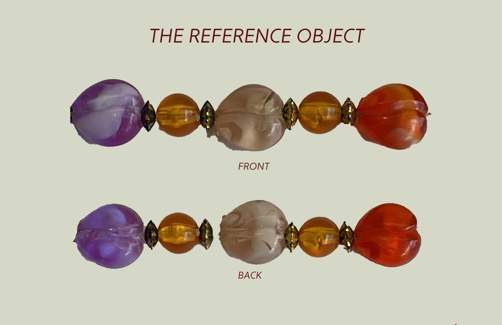
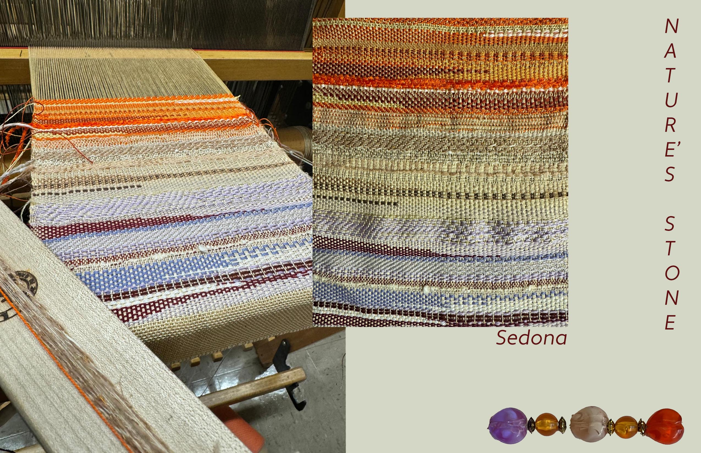
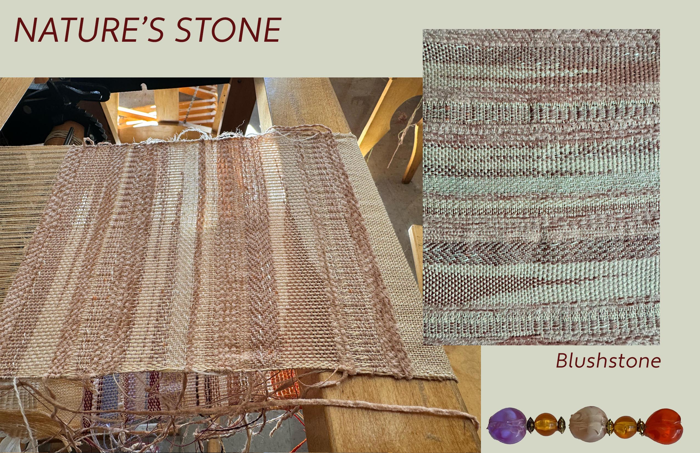
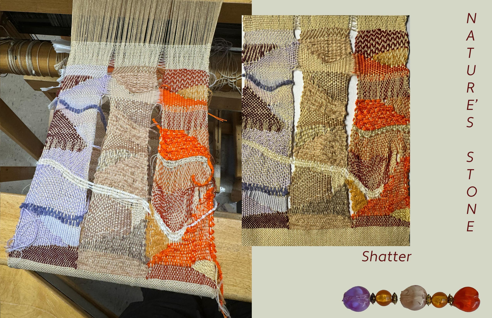

Concept
Nature's Stone captures the strength and calm of organic rock formations, translating rugged textures into elegant woven patterns. The palette and structures celebrate raw earth elements with a modern twist.
Inspiration
Final Patterns

Sedona — representing the entire object

Blushstone — representing a small part of the object

Shatter — representing the object in tapestry form